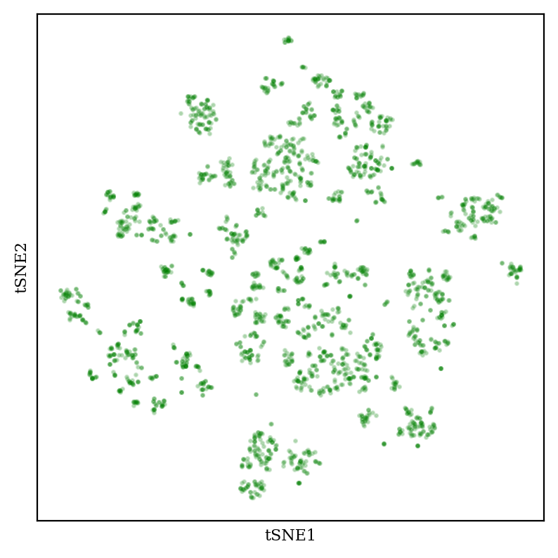
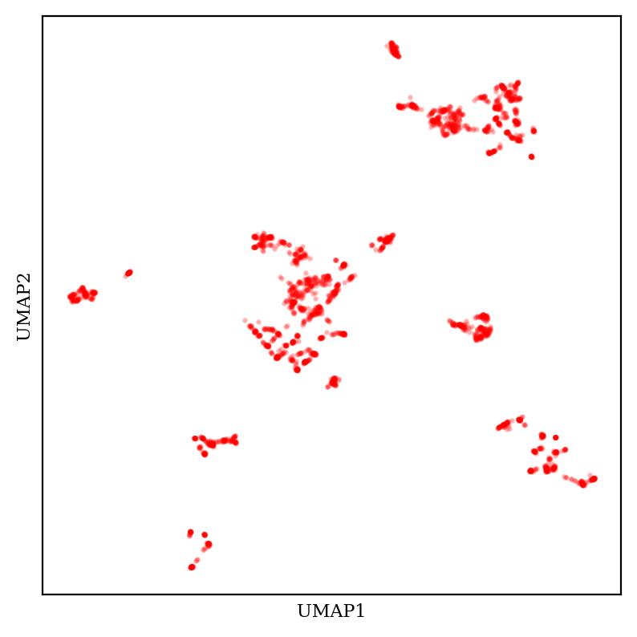
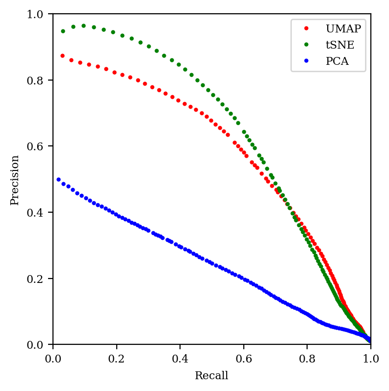
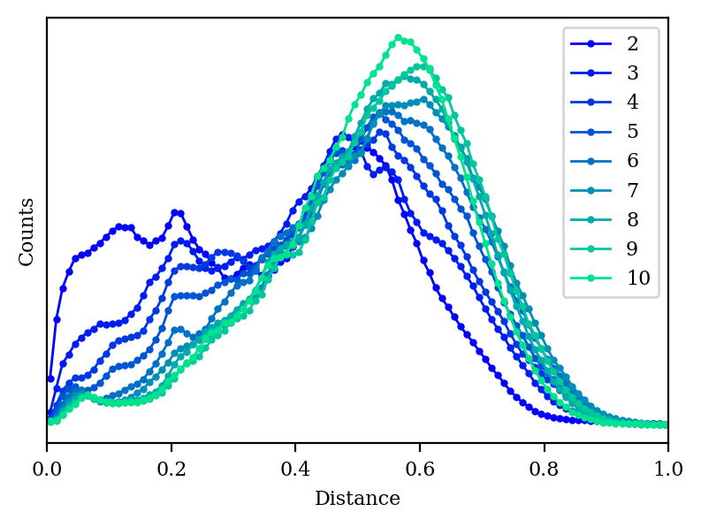

In many applications, including cheminformatics, it’s common to have datasets that have too many dimensions to analyze conveniently. For instance, chemical fingerprints are typically 2048-length binary vectors, meaning that “chemical space” as encoded by fingerprints is 2048-dimensional.
To more easily handle these complex datasets (and to bypass the “curse of dimensionality”), it’s common practice to use a dimensionality reduction algorithm to convert the data to a low-dimensional space. In this post I want to compare and contrast three approaches to dimensionality reduction, and discuss the challenges with low-dimensional embeddings in general.
Dimensionality Reduction Algorithms
There are many approaches to dimensionality reduction, but I’m only going to talk about three here: PCA, tSNE, and UMAP.
Principal component analysis (PCA) is perhaps the most famous dimensionality reduction algorithm, and is commonly used in a variety of scientific fields. PCA works by transforming the data into a new set of coordinates such that the first coordinate vector explains the largest amount of the variance, the second coordinate vector the next most variance, and so on and so forth. It’s pretty common for the first 5–20 dimensions to capture >99% of the variance, meaning that the subsequent dimensions can essentially be discarded wholesale.
tSNE (t-distributed stochastic neighbor embedding) and UMAP (uniform manifold approximation and projection) are alternative dimensionality reduction approaches, based on much more complex algorithms. To quote Wikipedia:
The t-SNE algorithm comprises two main stages. First, t-SNE constructs a probability distribution over pairs of high-dimensional objects in such a way that similar objects are assigned a higher probability while dissimilar points are assigned a lower probability. Second, t-SNE defines a similar probability distribution over the points in the low-dimensional map, and it minimizes the Kullback–Leibler divergence (KL divergence) between the two distributions with respect to the locations of the points in the map.
UMAP, at a high level, works in a very similar way, but uses some fancy topology to construct a “fuzzy simplicial complex” representation of the data in high-dimensional space, and then projects this representation down into a lower dimension (more detailed explanation). Practically, UMAP is a lot faster than tSNE, and is becoming the algorithm of choice for most cheminformatics applications. (Although, in fairness, there are ways to make tSNE faster.)
Data Visualization
For the purposes of this post, I chose to study Abbie Doyle’s set of 2683 aryl bromides (obtained from Reaxys, with various filters applied). I used the RDKIT7 fingerprint to generate a 2048-bit encoding of each aryl bromide, computed a distance matrix using Tanimoto/Jaccard distance, and then used each dimensionality reduction technique to generate a 2-dimensional embedding.
Let’s look at PCA first:
2D plot of aryl bromide chemical space using PCA.
PCA generally creates fuzzy-looking blobs, which sometimes show some amount of meaningful structure but don’t really display many sharp boundaries.
Now, let’s compare to tSNE:

2D plot of aryl bromide chemical space using tSNE (perplexity 20).
tSNE creates “blob-of-blob” plots which show many tight clusters arranged together in some sort of vague pattern. The size and position of the clusters can be tuned by changing the “perplexity” hyperparameter (see this StackOverflow post for more discussion, and this excellent post for demonstrations of how tSNE can be misleading).
What about UMAP?

2D plot of aryl bromide chemical space using UMAP (30 neighbors, 0.1 minimum distance).
UMAP also creates tight tSNE-like clusters, but UMAP plots generally have a much more variable overall shape—the clusters themselves are tighter and scattered across more space. (These considerations are complicated by the fact that UMAP has multiple tunable hyperparameters, meaning that the exact appearance of the plot is substantially up to the end user.)
The debate between tSNE and UMAP is spirited (e.g.), but for whatever reason people in chemistry almost exclusively use UMAP. (See, for instance, pretty much every paper I taked about in this post.)
An important thing that I’m not showing here, but which bears mentioning, is that the clusters in all three plots are actually chemically meaningful. For instance, each cluster in the tSNE plot generally corresponds to a different functional group: carboxylic acids, alkynes, etc. So the graphs do in some real sense correspond to the intuition we have about molecular similarity, which is good! (You can use molplotly to visualize these plots very easily.)
Distance Preservation
How well are distances from the high-dimensional space preserved in the 2D embedding? Obviously the distances won’t all be the same, but ideally the mapping would be monotonic: if distance A is greater than distance B in the high-dimensional space, we would like distance A to also be greater than distance B in the low-dimensional space.
We can measure this with Spearman correlation, which is like a Pearson correlation (AKA “r-squared”) but without the assumption of linearity. A Spearman correlation coefficient of 1 indicates a perfect monotonic relationship, while a coefficient of 0 indicates no relationship. Let’s plot the pairwise distances from each embedding against the true distances and compare the Spearman coefficients:
Comparison of distances in high-dimensional space against distances in embedding space, and associated Spearman coefficients. (Only one in every hundred points is plotted, but all points are used for the Spearman coefficient calculation.)
In each case, the trend is in the right direction (i.e. increased distance in high-dimensional space is correlated with increased distance in low-dimensional space), but the relationship is far from monotonic. It’s clear that there will be plenty of cases where two points will be close in low-dimensional space and far in high-dimensional space.
Does this mean that UMAP, tSNE, and PCA are all failing? To understand this better, let’s plot a histogram of all the distances in each space:
Histogram of all distances in each space. Distances have been scaled to the range [0,1] to match distances obtained with the Jaccard metric.
We can see that the 2048-dimensional space has a very distinct histogram. Most of the compounds are pretty different from one another, and—crucially—most of the distances are about the same (0.8 or so). In chemical terms, this means that most of the fingerprints share a few epitopes in common, but otherwise are substantially different, which is unsurprising since fingerprints in general are quite sparse.
Unfortunately, “lots of equidistant points” is an extremely tough pattern to recapitulate in a low-dimensional space. We can see why with a toy example: in 2D space, we can only have 3 equidistant points (an equilateral triangle), and in 3D space, we can only have 4 equidistant points (a tetrahedron). More generally, if we want N equidistant points, we need to be in RN-1 (N-1 dimensional Euclidean space). We can relax this requirement a little bit if we’re willing to accept approximate equidistance, but the general principle still holds: it’s hard to recapitulate lots of equidistant points in a low-dimensional space.
As expected, then, we can see that the histogram of each of our algorithms looks very different from the ideal distance histogram.
Local Structure
Both tSNE and UMAP take the nearest neighbors of each point explicitly into account, and claim to preserve the local structure of the points as much as possible. To put these claims to the test, I looked at the closest 30 neighbors of each point in high-dimensional space, and then checked how many of those neighbors made it into the closest 30 neighbors in low-dimensional space.
Histogram of how many of the closest 30 neighbors of each point are recapitulated after dimensionality reduction.
We can see that PCA only preserves about 30–40% of each point’s neighbors, whereas PCA and UMAP generally preserve 60% of the neighbors: not perfect, but much better.
I chose to look at 30 neighbors somewhat arbitrarily: what happens if we change this number?
The percent of neighbors recapitulated correctly, as neighborhood size increases.
We can see that UMAP and tSNE both preserve about 60% of the neighbors across a wide range of neighborhood sizes, while PCA gets better as we zoom out more. (At the limit where we consider all 2683 points as neighbors, every method will trivially achieve perfect accuracy.) tSNE does much better than UMAP for small neighborhoods; I’m not sure why!
Another way to think about this is in terms of the precision–recall tradeoff. In classification, “precision” refers to a classifier’s ability to avoid false positives, while “recall” refers to a classifier’s ability to avoid false negatives. What does this mean in the context of embedding?
Imagine looking at all points in the neighborhood of our central point in high-dimensional space, and then comparing to the points within a certain radius of our point in low-dimensional space. As we increase the radius, we expect to see more of the correct neighbor points in low-dimensional space, but we also expect to see more “incorrect neighbors” that aren’t really there in the high-dimensional space. (This paper discusses these issues nicely, as does this presentation.)
So low radii lead to high precision (most of the points are really neighbors) but low recall (we’re not finding most of the neighbors), while high radii lead to low precision and high recall. We can thus study the performance of our embedding by graphing the precision–recall curve for various neighborhood sizes. The better the embedding, the closer the curve will come to the top right:

Precision–recall tradeoff for all three methods.
We can see that tSNE does better in the high precision/low recall area of the curve (as we saw in the previous graph), but otherwise tSNE and UMAP are quite comparable. In contrast, PCA is just abysmal.
The big conclusion of this section is that, if you’re doing something that depends on the local structure of the data, you should avoid PCA.
Do Higher Dimensions Help Things?
Since the root of our issues here is trying to represent a 2048-dimensional distance matrix in 2 dimensions, one might wonder if we could do better by expanding to 3, 4, or more dimensions. This would make visualization tricky, but might still be suitable for other operations (like clustering).
tSNE gets very, very slow in higher dimensions, so I focused on PCA and UMAP for this study. I started out by comparing the Spearman correlation for PCA and UMAP up to 20 dimensions:
Precision–recall tradeoff for all three methods.
Surprisingly, UMAP doesn’t seem to get any better in high dimensions, but PCA does. (Changing the number of neighbors didn’t help UMAP at all.)
How do our other metrics look with high-dimensional PCA?

Distance histogram for PCA with 2–10 dimensions.
As we increase the number of dimensions, the distance histogram starts to approach the correct distribution.
Neighbor histogram for PCA with 2–10 dimensions.
We also start to do a better job capturing the local structure of the graph, although we’re still not as good as tSNE or UMAP even at 10 dimensions.
Precision–recall curve for PCA with 2–10 dimensions.
And our precision–recall graph is still pretty dismal when compared to tSNE or UMAP. So, it seems like if distances are what matters, then high-dimensional PCA is an appealing choice—but if local structure is what matters, tSNE or UMAP is still superior.
Conclusions
My big takeaway from all of this is: dimensionality reduction is a lossy process, and one where you always have to make tradeoffs. You’re fundamentally throwing away information, and that always has a cost: there’s no such thing as a free lunch. As such, if you don’t have to perform dimensionality reduction, then my inclination would be to avoid it. (People in single-cell genomics seem to have come to a similar conclusion.)
If you really need your data to be in a low-dimensional space (e.g. for plotting), then keep in mind what you’re trying to study! PCA seems to do a slightly better job with distances (although I’m sure there are more sophisticated strategies for distance-preserving dimensionality reduction), while tSNE and UMAP seem to do much, much better with local structure.
Thanks to Michael Tartre for helpful conversations, and the students in Carnegie Mellon’s “Digital Molecular Design Studio” class for their thought-provoking questions on these topics.
(This is more of a housekeeping post than an actual post with content; apologies.)
Up until now, my blogging strategy has been to write new posts about once a week and publicize them on Twitter, which works great for people who are on Twitter but (obviously) fails for people who aren’t on Twitter. I’m frequently asked if there are non-Twitter ways to subscribe to the blog updates: given that I myself don’t love relying on Twitter to bring me content, and that Twitter itself feels increasingly dicey, I feel bad saying no every time.
I’m happy to announce that there are now two additional ways to read the blog: RSS and Substack.
RSS
RSS is a lovely way to get updates from sites, which is sadly limited by the fact that nobody uses it anymore. (Half the people I talk to these days don’t even know what it is.) You can use an RSS aggregator like Feedly, and simply subscribe to various sites, so that they’ll dependably show up in your feed. This is the main way I get journal updates and my news.
So, if you like using RSS, you can simply search “corinwagen.github.io” in Feedly, and the blog will come up:
What it looks like on Feedly. The Twitter preview images sadly don't display.
Substack
Substack is a platform that helps people write and manage newsletters. It essentially solves the problem of “how do I create an email list”/“how do I manage subscriptions” for people who would rather not take care of hosting a web service and handling payments themselves, like me.
I initially didn’t want to use Substack because (1) I wanted the blog to be part of my website, (2) I liked being able to control every aspect of the design, and (3) I wasn’t sure if anyone would read the blog, and there’s nothing sadder than an empty Substack. As things stand, (3) is a non-issue, so the question is whether the added convenience of Substack outweighs my own personal design and website preferences.
I suspect that it may, so I’ve capitulated and copied all existing posts over to my new Substack. (There are a few formatting issues in old posts, but otherwise things copied pretty well.)
For now, I plan to continue posting everything on the blog, and manually copying each post over to Substack (I write in plain HTML so this is not too hard). If Substack ends up totally outperforming the blog in terms of views, then I’ll probably switch to Substack entirely for blogging and just leave my website up as a sort of virtual CV.
(I have no plans to enable subscriptions at this point; that being said, if for some bizarre reason there’s sufficient demand I’ll probably try to think of something to reward subscribers.)
If you’d like to receive updates on Substack, you can subscribe below:
This Easter week, I’ve been thinking about why new ventures are so important. Whether in private industry, where startups are the most consistent source of innovative ideas, or in academia, where new assistant professors are hired each year, newcomers are often the most consistent source of innovation. Why is this?
One explanation is the Arrow replacement effect (named after Kenneth Arrow), which states that “preinvention monopoly power acts as a strong disincentive to further innovation.” Arrow’s argument goes like this: suppose there’s an organization that is earning profit Pold, and there is some innovation that will increase profit to Pnew (Pnew > Pold). If the existing organization pursues the innovation, their profits will thus increase by ∆P := Pnew - Pold. But a new organization will see its profits increase by Pnew: since the startup has no existing profit to replace, the rewards to innovation are higher. Thus innovation is more appealing for those without any economic stake in the status quo.1
We can see this play out today in the dynamic between Google and OpenAI/Microsoft: Google already has a virtual monopoly in search, and so is hesitant to replace what they have, whereas Microsoft has already been losing in search and so is eager to replace Bing with Sydney an AI-powered alternative. (It’s to Apple’s credit that they so eagerly pursued the iPhone when it meant effectively destroying the iPod, one of their top money-makers.2)
One can also see this scenario in academia—plenty of established labs have programs built up around studying specific systems, and are thus disincentivized to study areas which might obviate projects they’ve spent decades working on. For instance, labs dedicated to “conventional” synthetic methodology might be slower to turn to biocatalysis than a new assistant professor with nothing to lose; labs that have spent decades studying protein folding might be slower to turn to AlphaFold than they ought to.
Another reason is that new entrants often have an advantage in understanding the status quo. In The Art of Doing Science and Engineering (book review coming, eventually), computing legend Richard Hamming discusses how there’s often a disadvantage to being a pioneer in a field. Hamming’s argument, essentially, is that those who’ve had to invent something new never understand it as intuitively as those who have simply learned to take it for granted:
The reason this happens is that the creators have to fight through so many dark difficulties, and wade through so much misunderstanding and confusion, they cannot see the light as others can, now the door is open and the path made easy…. in time the same will probably be true of you.
In Hamming’s view, it’s the latecomers to a field who can see more clearly the new possibilities opened by various innovations, and take the next steps towards previously unimaginable frontiers. There’s a deep irony in this: the very act of inventing something new makes you less able to see the innovations enabled by your own work. The process of invention thus acts like a relay race, where newer generations continually take the baton and push things forward before in turn dropping back.
I’ve heard these ideas discussed in terms of naïvete before—the idea being that innovation requires a sort of “beginner’s luck,” a blind optimism about what’s possible that the experienced lack—but I think that’s wrong. A belief in naïvete as the key driver of innovation implies that excessive knowledge is detrimental: that it’s possible to “know too much” and cripple oneself. If anything, the opposite is true in my experience. The most creative and productive people I’ve met are those with an utter mastery of the knowledge in their domain.
Hamming’s proposal, which is more cognitive/subconscious, is thus complementary to the more calculated logic of the Arrow replacement theorem: existing organizations are both less incentivized to innovate and less able to see potential innovations. These ideas should be encouraging to anyone at the beginning of their career: you are uniquely poised to discover and exploit new opportunities! So consider this an exhortation to go out and do so now (rather than waiting until you are older and more secure in your field).
Credit to Alex Tabarrok for introducing me to the Arrow replacement effect, and ChatGPT for some edits.
Footnotes
This is a bit of a cartoonish depiction of the Arrow replacement theorem—the original paper (linked above) is quite readable, and performs a more sophisticated analysis. See the heading “Competition, Monopoly, and the Incentive to Innovate” on page 12 of the PDF (journal page 619).
Tony Fadell discusses this in Build: suffice it to say this was not an internally popular decision at Apple.
While scientific companies frequently publish their research in academic journals, it seems broadly true that publication is not incentivized for companies the same way it is for academic groups. Professors need publications to get tenure, graduate students need publications to graduate, postdocs need publications to get jobs, and research groups need publications to win grants. So the incentives of everyone in the academic system are aligned towards publishing papers, and lots of papers get published.
In contrast, the success or failure of a private company is—to a first approximation—unrelated to its publication record. Indeed, publication might even be harmful for companies, insofar as time spent preparing manuscripts and acquiring data only needed for publication is time that could be spent on more mission-critical activities.
That’s why I generally believe industry publications, especially those where no academic co-authors are involved, are underrated, and are probably better than the journal they’re in might indicate. Getting a publication into a prestigious journal like Science or Nature is pretty random, requires a lot of effort, and frequently has a slow turnaround time, whereas lower-tier journals are likely to accept your work, and typically review and publish papers much, much faster. (In particular, ACS is among the fastest of all scientific publishers, and is generally a pleasure to work with.)
The above reflections were prompted by reading an absolute gem of a paper in J. Med. Chem., a collaboration between X-Chem, ZebiAI, and Google Research. The paper is entitled “Machine Learning on DNA-Encoded Libraries: A New Paradigm for Hit Finding” and describes how data from DNA-encoded libraries (DELs) can be used to train ML models to predict commercially available compounds with activity against a given target. This is a really, really big deal. As the authors put it in their conclusion:
[Our approach] avoids the time-consuming and expensive process of building new chemical matter into a DEL library and performing new selections or incorporating new molecules into a HTS screening library. This ability to consider compounds outside of the DEL is the biggest advantage of our approach; notably, this approach can be used at a fraction of the cost of a traditional DEL screening follow-up, driven primarily by the large difference in synthesis cost.
Now, the precise impact of this discovery will of course be determined in the years to come; Derek Lowe raises some fair concerns on his blog, pointing out that the targets chosen are relatively easy to drug, and so probably wouldn’t be the subject of a high-tech DEL screen anyway, and it’s entirely possible that there will be other unforeseen complications with this technology that are only revealed in the context of a real-world discovery pipeline. (Given that Relay acquired ZebiAI for $85M in 2021 essentially on the strength of this paper alone, I’m guessing plenty of real-world testing is already underway.)
The point I want to make is that if this paper had come from an academic group, I would be very, very surprised to see it in J. Med Chem. This project has everything that one expects in a Science paper: a flashy new piece of technology, a problem that’s understandable to a broad audience, clear clincal relevance, even a domain arbitrage angle. Yet this paper is not in Science, nor ACS Central Science, nor even JACS, but in J. Med. Chem., a journal I don’t even read regularly.
My conclusions from this are (1) to remember that not everyone is incentivized to market their own findings as strongly as academics are and (2) to try and look out for less-hyped industry results that I might neglect otherwise.
If you are a scientist, odds are you should be reading the literature more. This might not be true in every case—one can certainly imagine someone who reads the literature too much and never does any actual work—but as a heuristic, my experience has been that most people would benefit from reading more than they do, and often much more. Despite the somewhat aggressive title, my hope in writing this is to encourage you to read the literature more: to make you excited about reading the literature, not to guilt you into it or provoke anxiety.
Why You Should Read The Literature More
You should read the literature because you are a scientist, and your business is ideas. The literature is the vast, messy, primal chaos that contains centuries of scientific ideas. If you are an ideas worker, this is your raw material—this is what you work with. Not reading the literature as an ideas worker is like not going to new restaurants as a new chef, or not looking at other people’s art as an artist, or not listening to music as a composer. Maybe the rare person has an internal creativity so deep that they don’t need any external sources of inspiration, but I’m not sure I know anyone like that.
If you buy the concept of “domain arbitrage” I outlined last week, then reading the literature becomes doubly important for up-and-coming arbitrageurs. Not only do you need to stay on top of research in your own field, but you also need to keep an eye on other fields, to look for unexpected connections. It was only after months of reading physical chemistry papers about various IR spectroscopy techniques, with no direct goal in mind, that I realized I could use in situ IR to pin down the structure of ethereal HCl; simply reading organic chemistry papers would not have given me that insight.
How You Can Read The Literature More
If you don’t read the literature at all—like me, when I started undergrad—then you should start small. I usually recommend JACS to chemists. Just try to read every paper in your subfield in JACS for a few months; I began by trying to read every organic chemistry paper in JACS. At the beginning, probably only 10–20% will make sense. But if you push through and keep trying to make sense of things, eventually it will get easier. You’ll start to see the same experiments repeated, understand the structure of different types of papers, and even recognize certain turns of phrase. (This happened to me after about a year and a half of reading the literature.)
Reading more papers makes you a faster reader. Here’s Tyler Cowen on how he reads so quickly (not papers specifically, but still applicable):
The best way to read quickly is to read lots. And lots. And to have started a long time ago. Then maybe you know what is coming in the current book. Reading quickly is often, in a margin-relevant way, close to not reading much at all.
Note that when you add up the time costs of reading lots, quick readers don’t consume information as efficiently as you might think. They’ve chosen a path with high upfront costs and low marginal costs. "It took me 44 years to read this book" is not a bad answer to many questions about reading speed.
All of Tyler’s advice applies doubly to scientific writing, which is often jargon-filled and ordered in arcane ways. After 7ish years of reading the scientific literature, I can “skim” a JACS paper pretty quickly and determine what, if anything, is likely to be novel or interesting to me, which makes staying on top of the literature much easier than it used to be.
Once you are good with a single journal, you can expand to multiple journals. A good starting set for organic chemistry is JACS, Science, Nature, Nature Chemistry, and Angewandte. If you already know how to read papers quickly, it will not be very hard to read more and more papers. But expanding to new journals brings challenges: how do you keep up with all of them at once? Lots of people use an RSS feed to aggregate different journals—I use Feedly, as do several of my coworkers. (You can also get this blog on Feedly!)
I typically check Feedly many times a day on my phone; I can look at the TOC graphic, the abstract, and the title, and then if I like how the paper looks I’ll email it to myself. Every other day or so, I sit down at my computer with a cup of coffee and read through the papers I’ve emailed to myself. This is separate from my “pursuing ideas from my research”/”doing a literature dive for group meeting” way of reading the literature—this is just to keep up with all the cool stuff that I wouldn’t otherwise hear about.
“Inbox Zero” often proves elusive.
(I also use Google Scholar Alerts to email me when new labs publish results—I have probably 20-30 labs set up this way, just to make sure I don’t miss results that might be important just because they’re not in a high-profile journal.)
Keeping track of papers you actually like and want to remember is another challenge. For the past two years, I’ve put the URLs into a Google Sheet, along with a one-sentence summary of the paper, which helps me look through my “most liked” papers when I want to find something. Sadly, I didn’t do this earlier, so I’m often tormented by papers I dimly remember but can no longer locate.
What Literature You Should Read
This obviously depends on what you’re doing, but I tend to think about literature results in three categories:
Things every scientist should know about
Things I am supposed to be an expert on
Things I’m not supposed to be an expert on, but would still like to know about
Category 1 basically covers the highest profile results (Science and Nature), and these days Twitter makes that pretty easy.
Category 2 covers things “in-field” or directly related to my projects—anything it would be somewhat embarrassing not to know about. For me, this means JACS, Angewandte, ACS Catalysis, Org. Lett., OPRD, Organometallics, J. Org. Chem., and Chem. Sci. (I also follow Chem. Rev. and Chem. Soc. Rev., because review articles are nice.)
Category 3 covers things that I am excited to learn about. Right now, that’s JCTC and J. Phys. Chem. A–C. In the past, that’s included ACS Chem. Bio., Nature Chem. Bio., and Inorganic Chemistry. (Writing this piece made me realize I should follow JCIM and J. Chem. Phys., so I just added them to Feedly.)
Conclusion
Reading the literature is—in the short term—pointless, sometimes frustrating, and just a waste of time. It’s rare that the article you read today will lead to an insight on the problem you’re currently facing! But the gains to knowledge compound over time, so spending time reading the literature today will make you a much better scientist in the long run.
Thanks to Ari Wagen and Joe Gair for reading drafts of this post.